Class 3 homework · interactive landing page
How we prompted
Every prompt, in order: what the feedback asked for, the prompt we gave the agents, the moodboard references behind it, what came back, and what we fixed. Niche: a moving company.
01
The brief, the niche and the moodboard
The homework: build an interactive landing page with AI for a niche of our choice, use two or three pieces from the class component galleries, give it an interactive background, and polish it on phone, tablet and desktop. Our niche is a moving company. Our angle is a discreet night relocation service: a premium mover whose page has a quiet second meaning. The page implies and never states.
The moodboard: 68 kept references in 7 sections
Every reference has an id (a section letter and a number), an image and a source link. The ids are what make the prompts specific: a prompt does not say "make a nice pricing section", it says "pricing from P08". Each built page carries a references layer that shows which id each section came from.
| Section | Kept | Ids (red = used on the final page) |
|---|---|---|
| 01 Navbar | 13 | N01 N04 N05 N06 N07 N09 N16 N17 N18 N30 N31 N32 N36 |
| 02 Hero | 16 | H01 H02 H03 H04 H05 H06 H07 H08 H09 H10 H11 H12 H13 H14 H15 H16 |
| 03 Services | 5 | S02 S05 S06 S21 S23 |
| 04 Pricing | 9 | P01 P02 P03 P06 P07 P08 P13 P14 P29 |
| 05 Testimonials | 9 | T01 T02 T04 T07 T10 T11 T13 T19 T20 |
| 06 CTA | 4 | C01 C02 C03 C10 |
| 07 Footer | 12 | F01 F02 F03 F04 F05 F06 F10 F11 F12 F13 F14 F15 |
Navbar: 9 kept in the first pass, plus N30, N31, N32 and N36 added later and used in the builds.
The kept references, by section red frame = used on the final page
01 Navbar 13 kept
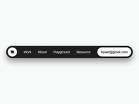
02 Hero 16 kept
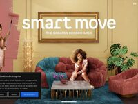
03 Services 5 kept
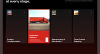
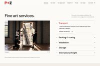
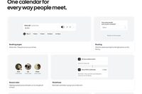
04 Pricing 9 kept
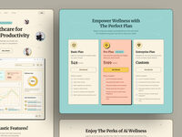
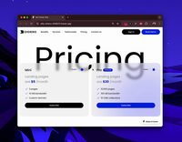
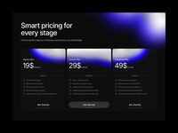
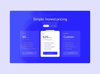
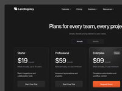
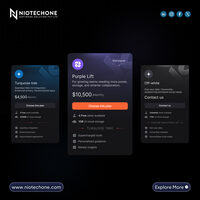
05 Testimonials 9 kept
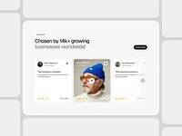
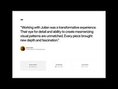
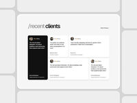
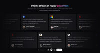
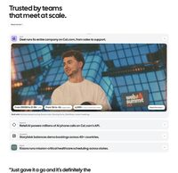
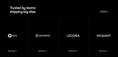
06 CTA 4 kept
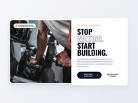
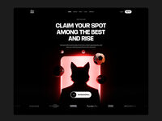
07 Footer 12 kept
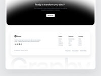
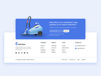
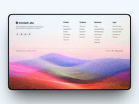
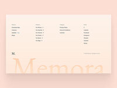
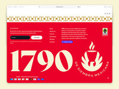
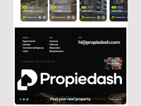
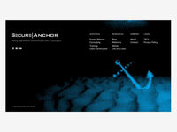
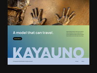
02
Moodboard to website: which reference went where
The final page is V16 "Lethe: Evaporation". Every section of it starts from a moodboard keep. Left: the keep. Middle: what we took from it. Right: the section as built.
| Section | Moodboard keep | What we took from it | On the page |
|---|---|---|---|
| Nav | Dark floating pill, always centred, one solid CTA |  | |
| Hero | Full-bleed scene behind very large type, three figures under it | 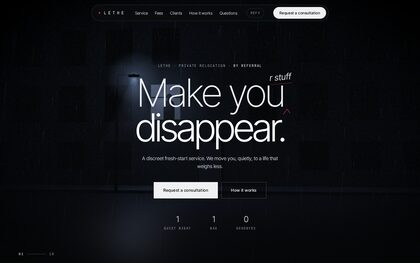 | |
| Premise | One large line, three short facts under a rule | 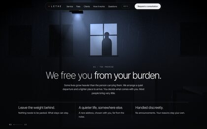 | |
| Three services | Row of cards; on tablet and phone the active one expands | 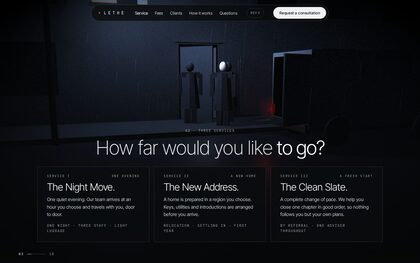 | |
| The evening | Dark logistics panel, flattened to four marks on one line | 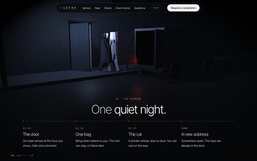 | |
| Fees | The V12 panels: head row, small line over a large title, dash list, price row | 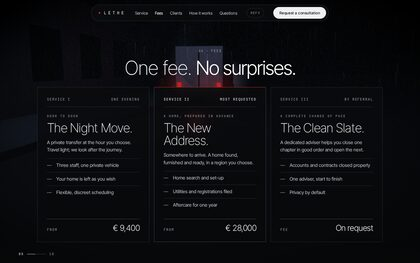 | |
| Kind words | The V12 portrait cards with covered eyes, rewritten | 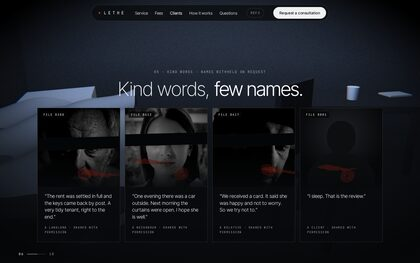 | |
| How it works | Numbered process row, four steps | 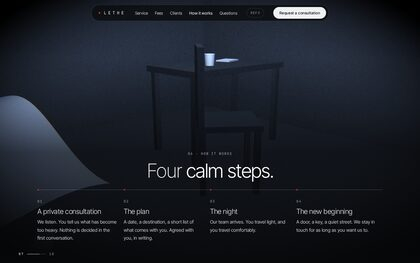 | |
| What we handle | Four equal feature cards, label over title over one line | 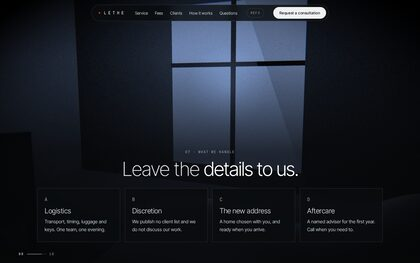 | |
| Questions | Two-column question list under a rule. The moodboard has no FAQ category; this is the closest kept reference | 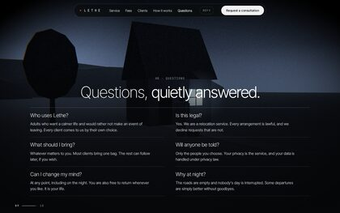 | |
| Consultation | Centred call to action, copy over the form |  | |
| Footer | Dark footer line, outline wordmark (phone), plain-language terms | 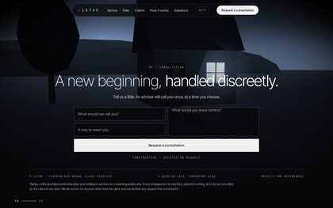 |
All sections of the final page are listed, including the four added in round 7. On the page itself, the R key or the Refs switch in the nav shows these ids over each section.
Class gallery pieces on the final page
- GSAP Observer, full-page sections: the section snap. One scroll step moves exactly one section.
- Cult UI, expandable cards: the three services and the questions on tablet and phone.
- Magic UI, blur-fade: each section's content arrives from blur when the section becomes active.
- Interactive background: the 3D night scene, which advances one beat per section and tilts slightly with the pointer.
The gallery pieces are rebuilt from their behaviour in plain HTML, CSS and JavaScript, as the class allowed ("copy the code or describe the piece to the AI").
03
The workflow: one orchestrator, several builders
We do not type "make me a landing page". One session, the orchestrator (a Claude session), turns spoken feedback into a structured prompt file. Builder agents read that file and build in parallel. The orchestrator reviews their screenshots and sends fixes. Then the client looks, gives the next feedback, and the loop runs again.
What every prompt contains
How this maps to the class rule
Class rule: a prompt is role + context + constraints + output format, each section gets its own spec, and mobile gets separate rules.
- Role: the task names each agent and its version.
- Context: the context and the references.
- Constraints: requirements and decisions.
- Output format: verification and output.
Working rules between agents
- Content goes into files. A message between agents only says "your turn: read this file".
- One version per agent, in its own folder. No agent edits another agent's version.
- Screenshots and video are made without a visible browser, one render at a time.
- Each agent looks at its own screenshots at three widths before it prints the done line.
How the prompts are shown in this document: the client gives feedback by voice. Here it is summarised in one line, and each prompt is written in one standard structure (the six parts above) with internal names removed. The requirements are the ones the agents were given.
04 · Round by round
Four versions to pick from
23 Nov 01:20 · one builder agent · versions A, B, C, D
What the feedback asked forTake the best parts of what we have made, show a few versions to choose from, keep the theme eerie without saying anything outright, and tie every choice to the moodboard.
The references we gave
The agent logged the build prompt for each version. Every section names the moodboard id it is built from, and each version names its gallery pieces.
What came back
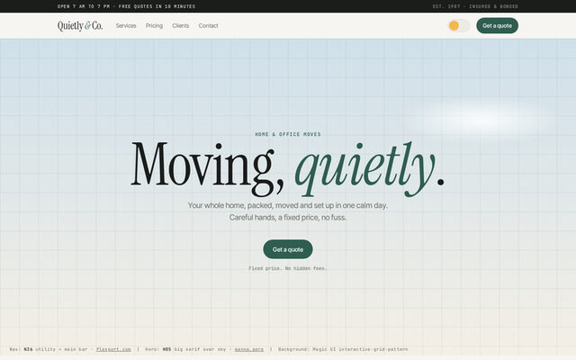
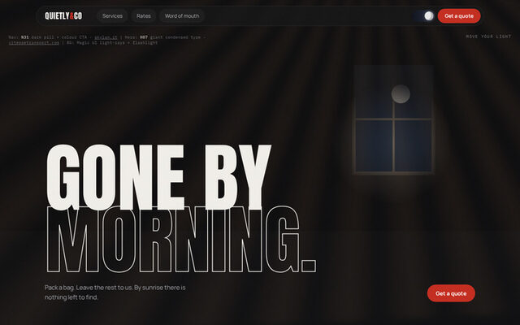
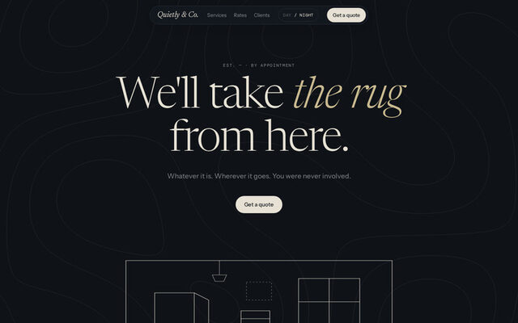
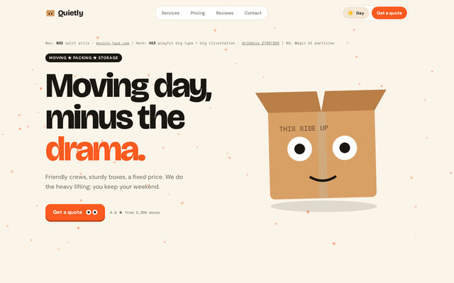
Four full pages for a placeholder brand, "Quietly & Co.", each with a Day/Night switch that changes the copy into a second meaning. Each was screenshotted at 390, 768 and 1440 px in both modes: 24 screenshots.
What the review found, and the fix
| # | Version | Flaw found (where) | Fix |
|---|---|---|---|
| 1 | A | Stats strip: the numbers rendered at 14 px. The label rule .stat span also hit the number span inside <b>. | Scoped the rule to the direct child (.stat>span). |
| 2 | A | Services bento: the 6th card left an empty cell at the end of the grid (desktop). | Made "Clean exit" a full-width card with the drawing and text side by side; it stacks on mobile. |
| 3 | A | Night: the dark featured testimonial inverted to a bright cream block that jumped out of the page. | Night override: a dark card with an amber border. |
| 4 | A | Night hero subheadline wrapped with a one-word last line ("want one."). | Widened the subheadline max-width from 520 to 560 px. |
| 5 | B | The page scrolled sideways at every width (scrollWidth 4,948-6,219 px). The marquee rows overflowed. | Added overflow:hidden on the stream wrapper. scrollWidth now equals the viewport at all three widths. |
| 6 | B | Hero: the flashlight sat behind the headline, so the room (boxes, window) was hidden and the outline word lost contrast. Day and night looked almost the same. | Moved the light's home and wander path to the right (x 0.7) on desktop and kept it centred on phones. Day radius 380 px (more of the room visible), night 170 px (narrow and tense). |
| 7 | C | The giant "Rates" word behind the cards was almost invisible (a 1 px stroke in the line colour). | Changed to a 1.5 px stroke at 28% ink. |
| 8 | D | Night: the featured "Family home" plan flipped to a cream card (ink and background swap). | Night override: a deep purple card with an orange border. |
| 9 | D | The night hero headline broke into four ragged lines ("Everything / fits. / If you fold it / right."). | Shortened it to "It all fits. / If you fold it right." |
| 10 | all | Mobile check: is the visual on top, are buttons full width, is the pushed plan first? | Confirmed in each 390 px shot: the A sky hero, the B room above the text, the C drawing above the headline and the D mascot above the text. Pushed plans come first (CSS order:-1). |
| 11 | all | No sideways scroll at 390, 768 or 1440, day or night. | Measured: scrollWidth equals the viewport width in all 24 shots. |
What we learned
- Naming one moodboard id per section gave four different pages, not one page in four colours.
- Most flaws only showed in the screenshots: a sideways scroll of several thousand pixels (row 5) was not visible in the code.
Two agents plan the hidden features together
23 Nov 03:02 · agent 1 (Claude) and a Codex agent · plan only, no build
What the feedback asked forBefore choosing a version, add hidden features and much heavier interaction, and have two agents work out the best plan together.
What came back
Five files: an ideas list from each agent, written without seeing the other's; a review of the other's list from each; and one merged proposal for the client.
- Both agents picked version C as the base, with the pricing from A and the selector from D.
- 10 hidden features, ranked, each with trigger, result, technology and hours. 3 marked as showpieces.
- 3 points where the agents disagreed, each given to the client with both views and a default if no answer comes.
- The Codex agent raised 2 objections to the merged proposal. Both were accepted.
- 4 small prototypes to prove the risky ideas:
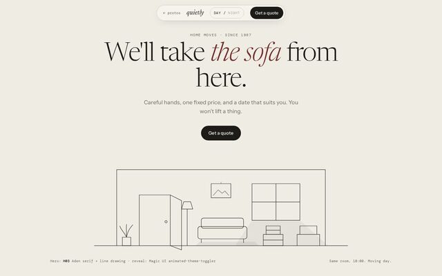
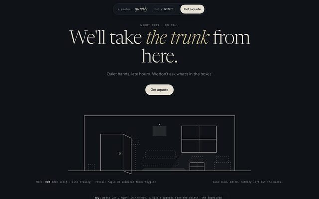
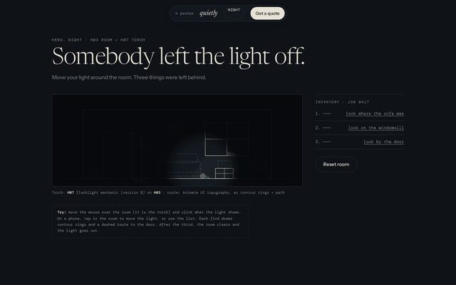
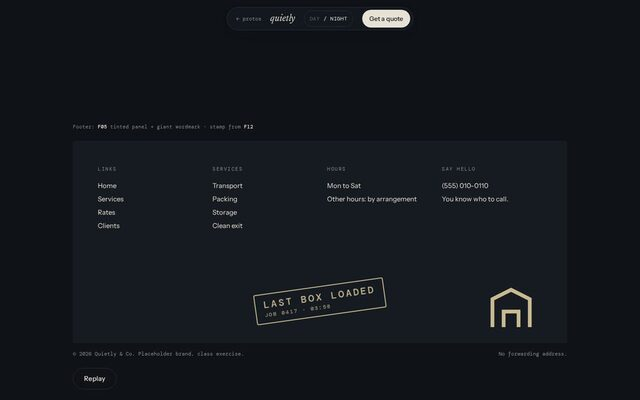
What we learned
- "Write your list without reading the other's" matters. Two independent lists overlap where an idea is strong and differ where it is a matter of taste.
- A cap of three rounds keeps two agents from debating without end.
- The second agent cut ideas the first one liked, for a good reason: a secret word typed into a real quote form can be a real customer's inventory.
Six separate worlds
23 Nov 03:34 · agent 1 (Claude) builds V1 to V3, the Codex agent builds V4 to V6
What the feedback asked forThe animations are nice but shallow. Add meaning, humor, dark fantasy and real media, and make more versions that are fully separate from each other.
What came back
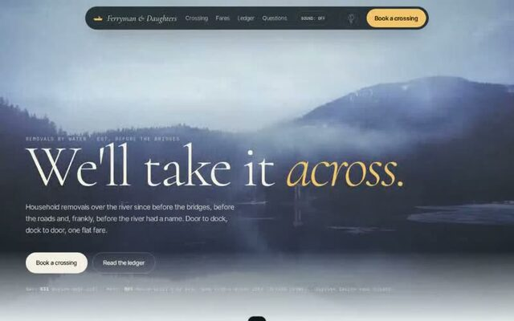
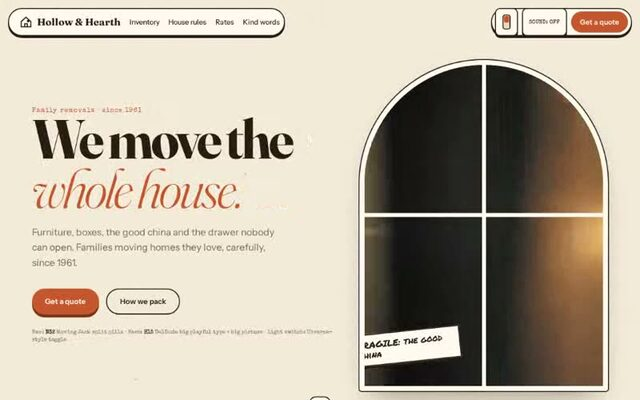
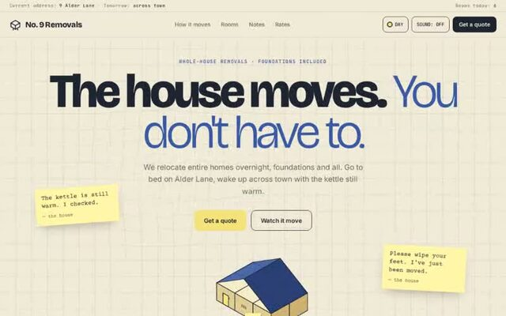
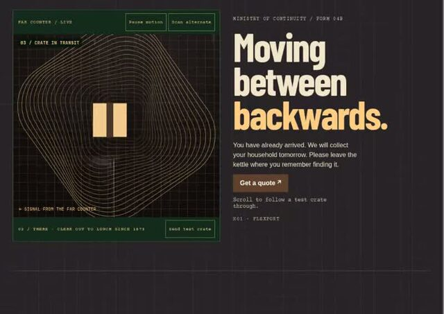
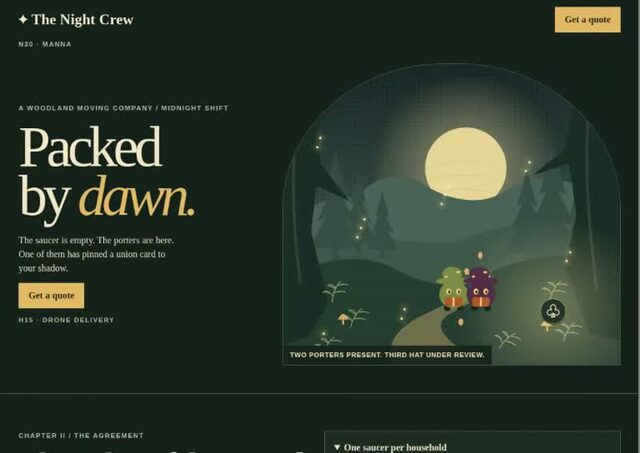
Six pages, each with its own story, rich media (video loops, scroll scenes, original animated characters), an asset list with licences, and three to five secrets. Halfway, each agent reviewed the other's first page and sent three notes. Two examples:
- Agent 1 on V4: the jokes are the strongest part, but apart from one widget it reads as a clean template with clever copy. Turn the monitor into a pinned scroll scene and add real footage.
- Codex on V1: with the secrets list open, the page measured 419 px wide in a 390 px viewport. Find the element that overflows before shipping.
What we learned
- The prompt aimed at the wrong tone. It turned "humor" and "dark fantasy" into funny, supernatural pages. The client found all six too bright and too playful.
- The fix in the next prompt: describe the tone by what it is like (a private bank, a security firm), and narrow the focus to four things.
- Six versions at once spread the effort thin. Round 4 asks for three, much deeper.
Dark, professional, real 3D
23 Nov 04:40 · agent 1 builds V7 to V9 · 04:57: agents 2 and 3 get one extra version each
What the feedback asked forNone of the six work: too bright and too happy. Make it dark, grim and professional, a little frightening, with real 3D animation and lines about making pain disappear.
What came back
- Three dark pages, each built around one scroll-driven 3D scene: a figure that dissolves into particles, a descent down a lift shaft, a truck leaving in the rain.
- A notes file with the sources studied (shader and lighting tutorials, award-winning 3D sites) and the rules taken from them: one fixed canvas, one light, one cheap post-processing pass, a pixel-ratio cap.
- The two extra versions (V10, V11) were stopped unfinished when the next feedback arrived. Their agents moved to round 5.
What we learned
- Stating the tone and the look precisely (dark, one light, photographic, serious) removed the round 3 problem in one pass.
- A quality bar the agent can check itself: if a page looks normal, bright or like a template, it is not finished.
- Each page got one thing right: the layout of one, the idea of another, the tone of the third. The next prompt says which part to take from which page.
- A real bug: scrolling back up did not bring the truck back. Round 5 turns it into a requirement with a test.
Four agents, four versions, one iteration
23 Nov 05:15 · agents 1 to 4, one version each · 15:25: the phone and tablet pass
What the feedback asked forCombine the layout of one page, the palette of the second and the seriousness of the third. Fix the scroll so the scene comes back on the way up. Go deeper, up to "remove your existence", with a double-meaning headline and much darker testimonials.
What came back
Four pages in one cold palette, each with the service ladder (stuff, trace, existence), the caret headline, darker testimonials with protected faces and case numbers, and a scene that plays backwards when you scroll up. Each agent delivered a scroll-down-then-up test at 390, 768 and 1440 px.
The follow-up prompt: phone and tablet
What the feedback asked forMake sure the tablet and phone versions are properly designed and finished too.
Example result, V15, at six screen sizes (390x844, 360x800, 430x932, 768x1024, 820x1180, 1024x768): no sideways scroll at any size; no tap target under 44 px; a sideways touch drag turns the scene without moving the page, and a vertical swipe scrolls as normal; the scene restores on the way back up at every size. The agent also listed what it did not do: no test on a real phone, and the study step could not be completed because the pages it tried refused automated reading.
What we learned
- "The scroll must be reversible" only became true once the prompt asked for proof: a test that scrolls down, then up, and compares.
- Pointing at a built page (tone like V7, palette like V8, structure like V9) is clearer than any adjective.
- "Make mobile good" is not a spec. The follow-up defines it in numbers: body text 16 px or more, contrast 4.5:1, gutters 20 and 32 px, tap targets 44 px, six named screen sizes.
- Four agents on one laptop need a shared rule, or they stall each other: one render at a time.
One direction, two builds
23 Nov 18:25 · agent 3 builds V16, agent 1 builds V17
What the feedback asked forLock the scroll section by section, keep the centred nav, the pricing and the testimonials, fix the home spacing, and drop the game-like dragging. Change the story: it should be about the person who is gone, with everything else left in place.
What came back
- V16 finished: seven snap sections on desktop, nine on tablet, ten on phone (long sections are split into extra snap pages, so nothing is cut off).
- The snap test passed at 390x844, 360x800, 768x1024, 1024x768 and 1440x900: every step landed exactly on a section top, down and up, with no sideways scroll.
- The first wheel rule failed the momentum test: when frames stalled, a long trackpad swipe skipped a section. The agent found it with the logged test and tightened the rule.
- V17 was stopped before its phone and tablet checks, because the client picked V16.
What we learned
- Naming one interaction as the most important one, and asking for a logged test of it, found a bug that no screenshot shows.
- Keeping the parts the client liked by name (pricing and testimonials of V12, nav of V14) stopped the agents from redesigning what already worked.
- Less interaction made the page better: the drag-to-look from round 5 was removed, and only a slight pointer tilt stays.
Polish V16 into the final page
23 Nov 19:05 · agent 3 · in progress as this draft is written
What the feedback asked forV16 is the one. Make the wording less direct, so that every line reads as a legitimate service. Add more sections with more information. Make the animation load earlier, look sharper and feel more dramatic.
What came back
The page as it stood at 19:30 on 23 Nov, with the four new sections in place. The polish may still be in progress; the frame-rate figure and the final snap-test result go here when the done line arrives.
What this prompt does differently
- It gives a test for copy. "Every line, quoted alone, must read as a legitimate service" is something the agent can check line by line. "Make it less direct" is not.
- It turns "better animation" into three separate requirements: earlier (scene visible within about 600 ms), sharper (pixel ratio and antialiasing), more dramatic (light changes, camera weight, one slow beat), with a frame-rate floor so quality does not cost smoothness.
- It protects what works. The decisions list what must stay unchanged, and the agent keeps a copy of the page before editing.
05
Anatomy of a good prompt
The round 5 prompt, part by part. Left: the words of the prompt. Right: why that part is there.
| 1 | # Round 5: four agents, four versions, one iteration |
A title that states the scope.Round, number of agents, number of versions. An agent that finds two prompt files knows which one is current and how big the job is. |
| 2 | <context> The client reviewed the three round 4 pages and liked a different thing in each: the page layout of HOLLOWAY (V9), the idea and cold palette of VOSS (V8), and the serious tone of LETHE (V7). The problems: in V9 the truck does not come back when you scroll up [...] |
What happened, and why this round exists.The agent cannot see the review. The context gives it the client's verdict in plain words: what to keep, what was wrong. With the reason in hand, the agent makes the hundred small decisions the prompt does not cover in the right direction. |
| 3 | <task> Four agents each build one version that combines the three strengths and fixes the problems. Agent 1 also builds the overview page once all four are finished. |
The outcome in two sentences.An action verb ("build"), the count, the owner, and the order of the dependent step. Everything after this is detail. |
| 4 | <references> - Tone: serious, premium, quiet menace, as in LETHE (round 4, V7). - Palette: the VOSS (round 4, V8) cold monochrome [...] - Page structure: HOLLOWAY (round 4, V9); start from it, then go further. - Moodboard: every section names its keep id [...] |
Point at something that exists.Each quality is tied to a page the agent can open, or to a moodboard keep. "As in V7" is exact; "serious and premium" alone is not. This is the class rule about references, applied to our own earlier work. |
| 5 | 1. Reversible scroll. The 3D scene is a timeline scrubbed by the scroll position, so scrolling up restores every object exactly. |
A bug, restated as a requirement.It names the mechanism wanted (a timeline tied to scroll position) and the behaviour that proves it. Nobody has to argue about what "reversible" means. |
| 6 | 3. The signature headline. The sentence reads "Make you disappear." A proofreader's insertion caret adds a small, faint "r stuff" after "you" [...] Animate it: the insertion writes itself in after a beat. Every version uses this. |
Exact wording for the one idea that must not drift.The sentence, the mark, the size, the motion. "Every version uses this" makes it a fixed point, so four agents produce four takes on the same signature. |
| 7 | 4. Darker testimonials. Portraits with the face protected (a bar over the eyes, heavy blur, cropped below the eyes, or a silhouette), case numbers in place of names [...] Dark, not gory. 5. Contrast and spacing. Body text at 4.5:1 or better; spacing on the 8 pt grid [...] |
Options plus a limit; numbers, not wishes.A list of acceptable treatments leaves room to design, and three words set the line that must not be crossed. "Better contrast" becomes a ratio the agent can measure in its own screenshots. |
| 8 | 6. The homework requirements stay: interactive background, class gallery pieces named in the sources file, works at 390, 768 and 1440 px, reduced motion supported. |
Carry the standing requirements forward.After five rounds the original homework is easy to lose. Each prompt repeats it in one line. |
| 9 | <versions> - V12 Holloway: Last Run (agent 1, who built V9): V9 rebuilt in the VOSS palette [...] - V15 Existence Removal (agent 4): a private bureau with three tiers of removal [...] |
One owner per version.Each agent has a name, a folder and a one-paragraph concept. "Who built V9" gives the work to the agent that already knows that code. Different concepts mean the client compares four ideas, not four copies. |
| 10 | <decisions> Already decided: tone, palette, page structure, the headline trick and the reversible scroll. Your call: the scene details, the accent colour, the hidden features [...] Ask me before: paid assets, deploying, or sending anything outside this laptop. |
Who decides what.The client's decisions are stated as fixed, so the agent does not reopen them. The agent's freedom is stated too, so it does not stop to ask. Anything costly or public needs a yes first. The human directs; the agent executes. |
| 11 | <verification> - Check at 390, 768 and 1440 px, including a test that scrolls down and then up and proves the scene restores. - Four agents share one laptop: run every screenshot or video job through the shared render queue [...] - Look at your own screenshots critically [...] |
Proof before the report.The test turns the hardest requirement into evidence. The render queue keeps four agents from freezing one laptop. The last line makes the agent its own first reviewer. |
| 12 | <output> Per version: the page, an assets file (source and licence), a sources file (moodboard ids and gallery pieces), a preview image and a preview video, and the check results. Print DONE <V12|V13|V14|V15> <path> <one line> when done. |
The same files from everyone, and a done line.The orchestrator can review four versions the same way, and knows exactly when to start. The sources file is what lets us say which moodboard reference each section came from. |
The short version
- Say what happened and why, in plain words, before saying what to do.
- Give a reference for every quality: a moodboard id or a page already built.
- Write requirements that can be checked: a number, a width, a test.
- Separate what is decided, what the agent may decide, and what needs a yes first.
- Ask for the same files from everyone, and for one exact line at the end.
06
Live page and final screenshots
Final screenshots
Final version
V16 "Lethe: Evaporation", after the round 7 polish. Chosen for its type and styling, the section-by-section scroll, and the centred layout.